Introdução à unidade
Nesta unidade, são abordadas as quatro operações fundamentais que envolvem números naturais, além de mais duas: a potenciação e a radiciação. Nesse momento, é importante incentivar várias estratégias para realizar os cálculos. No livro didático, são apresentadas duas formas para realizar o cálculo das quatro operações e incentiva-se a utilização do cálculo mental por meio da decomposição. Outras estratégias podem ser utilizadas pelos alunos, registradas no caderno e apresentadas à turma.
A seguir, relacionamos os objetivos que se pretende atingir ao estudar os conceitos desta unidade.
Capítulo 1 – Adição e subtração de números naturais
Objetivos:
► Associar a operação de adição à ideia de reunir ou acrescentar.
► Reconhecer as principais propriedades da adição.
► Associar a operação de subtração às ideias de retirar, completar e comparar.
► Resolver situações-problema que envolvam adição e subtração.
► Realizar adições e subtrações mentalmente, utilizando a decomposição de números naturais.
► Identificar que a adição e a subtração são operações inversas.
► Resolver expressões numéricas envolvendo adições e subtrações.
EF06MA03
UNIDADE 2 - Operações com números naturais

Reserva de Desenvolvimento Sustentável Mamirauá e Amanã. Tefé, AM, 2021.
Orientações específicas
Na abertura da unidade são apresentadas algumas informações sobre a floresta amazônica. Nesse momento, pretende-se promover uma discussão por meio dessas informações para verificar se os alunos identificam quais operações podem ser utilizadas para responder às questões propostas. Nos anos anteriores, eles estudaram as quatro operações fundamentais, porém talvez conheçam ou já tenham tido contado com a potenciação e a radiciação. Nesta unidade faremos uma retomada das quatro operações fundamentais e apresentaremos duas novas operações.
Para maiores informações sobre a Floresta Amazônica, pode-se realizar um trabalho conjunto com a disciplina de Ciências, investigando outras informações numéricas, estabelecendo relações entre a Matemática e outros campos do saber.
46
Capítulo 2 – Multiplicação e divisão de números naturais
Objetivos:
► Associar a operação de multiplicação às ideias de adicionar parcelas iguais, combinação, proporcionalidade e contagem de elementos em uma organização retangular.
► Reconhecer as principais propriedades da multiplicação.
► Associar a operação de divisão às ideias de repartir igualmente e medir (quantas vezes cabem). ► Resolver situações-problema que envolvam multiplicação e divisão.
► Realizar multiplicações e divisões mentalmente, utilizando a decomposição de números naturais.
► Identificar que a multiplicação e a divisão são operações inversas.
► Resolver expressões numéricas envolvendo adições, subtrações, multiplicações e divisões.
Capítulo 3 – Potenciação e radiciação de números naturais
Objetivos:
► Calcular potências, raiz quadrada e cúbica.
► Identificar que a potenciação e a radiciação são operações inversas.
► Resolver situações-problema que envolvam potenciação e radiciação.
► Resolver expressões numéricas envolvendo adições, subtrações, multiplicações, divisões, potenciação e radiciação.
Probabilidade e estatística – Interpretação e construção de gráficos de barras
Objetivos:
► Reconhecer e interpretar um gráfico de barras.
► Construir gráficos de barras.
ASCOM/MCTI
A Floresta Amazônica, maior floresta tropical do planeta, apresenta diferentes tipos de matas e uma infinidade de espécies vegetais e animais.
Sua área total é de 7 584 421 quilômetros quadrados, aproximada-mente 20 vezes maior que o território do Japão. A maior parte dessa floresta está em território brasileiro, ocupando 5 217 423 quilômetros quadrados.
CONVERSE
Explique aos alunos que a Floresta Amazônica funciona como um grande reator para o equilíbrio ambiental do planeta e é abundante em vários recursos. Ela apresenta uma diversidade de recursos vegetais, minerais e animais, água doce, responsável pelo controle hídrico e climático, estoque de carbono, capacidade de transferir calor e vapor para outras regiões, entre outras coisas.
1. Em sua opinião, qual é a importância da Floresta Amazônica para a humanidade? Resposta pessoal.
2. Quantos quilômetros quadrados de floresta não estão em território brasileiro? Qual operação matemática você utilizou para realizar esse cálculo? 2 366 998. Pode-se utilizar a subtração.
3. De acordo com as informações do texto, é possível calcular a área do Japão? Como você faria esse cálculo? Como o texto diz que a fl oresta é aproximadamente 20 vezes maior que o Japão, pode-se utilizar a operação inversa para calcular a área do Japão, no caso a divisão.
4. Quais as operações matemáticas que você conhece? Verifi car com os alunos quais as operações que eles conhecem. Nessa fase, eles provavelmente citarão a adição, subtração, multiplicação e divisão. Porém, alguns podem citar a potenciação e a radiciação.
47
47
| Principais habilidades da BNCC | EF06MA03 |
|---|---|
| Competências | CG7, CG9, CE2, CE3, CE8 |
Neste capítulo, são exploradas, por meio de situações-problema, as ideias relacionadas à adição e à subtração.
De acordo com Ramos (2009, p. 62-63):
Quando uma criança considera a quantidade que já tem e com base nisso acrescenta a nova quantidade para encontrar o resultado, está adicionando, ou seja, realizando uma operação matemática. Sempre que ela voltar a contar do primeiro elemento estará fazendo uma contagem, não uma adição. Em uma situação de subtração, ela também estará contando se depois que retirar a quantidade subtraída voltar a contar do primeiro elemento. Ela estará realizando uma operação de subtração quando for capaz de imaginar que, se tinha 9 balas e comeu 3, ficou com 6, sem que precise voltar e contar uma a uma as balas que tem.Operar matematicamente é realizar uma transformação reversível. Reversibilidade é a capacidade de ir e vir do pensamento, ou seja, partir de uma ação realizada e ser capaz de refazer os passos de volta ao início, desfazendo a ação.
Faço uma operação matemática quando considero o estado inicial da situação e o fato que está transformando aquela quantidade, encontrando assim, o estado final. E se precisar, posso desfazer essa ação. A operação matemática é uma ação transformadora que pode ser desfeita.
Para que uma criança “opere” matematicamente é preciso que ela “conserve” a quantidade inicial, compreenda que ação está acontecendo ou já aconteceu e seja capaz de encontrar o resultado final.
Adição
Ao iniciar o estudo da adição, são apresentadas duas situações- problema. Na primeira, por meio de uma reportagem, questiona-se a quantidade total de botos que foram avistados pelos pesquisadores. Nesse caso, a situação envolve a ideia de reunir ou juntar, note que não há temporalidade, a quantidade
EF06MA03
CAPÍTULO 1 - Adição e subtração de números naturais
Adição
Observe a reportagem a seguir.
Censo de botos em rios do PA quer medir impacto de construção de barragens
Profissionais do Instituto Mamirauá e da ONG WWF (World Wide Fund) percorreram 577 km na Bacia do Tapajós, no Pará, para documentar a distribuição e estimar a abundância de botos na região.
Resultados preliminares foram divulgados pelas instituições, que avistaram ao longo do percurso 160 indivíduos de tucuxi (Sotalia fluviatilis), conhecidos como boto-cinza, e 112 indivíduos de boto-vermelho (Inia geoffrensis).
O resultado final poderá ajudar a entender e acompanhar a saúde dos rios na região, inclusive em relação a riscos frente a alterações ambientais, como desmatamento e construção de hidrelétricas.
[...]
Boto-cor-de-rosa, também conhecido como boto-vermelho. Rio Tapajós, região de Santarém, PA, 2014.
CENSO de botos em rios do PA quer medir impacto de construção de barragens. UOL Notícias, 4 set. 2014.
Disponível em: http://noticias.uol.com.br/meio-ambiente/ultimas-noticias/redacao/2014/09/04/censo-de-botos-e-realizado-na-bacia-do-tapajos-no-para.htm.
Acesso em: 4 fev. 2022.

1. Troque ideias com seus colegas e, em seus cadernos, respondam: quantos botos foram avistados, ao todo, pela equipe de pesquisadores?
Nesse caso, para saber o total de botos avistados, reunimos a quantidade de botos-cinza com a de botos-vermelho.
O problema pode ser resolvido por meio do uso do algoritmo usual da adição ou por meio do algoritmo da decomposição. Outras formas de resolução podem aparecer. Ao total são cerca de 272 botos avistados. Essa situação envolve a ideia de juntar ou reunir da adição.
UNIDADE 2 - CAPÍTULO 1
48
48
de botos-cinza e botos-vermelho já estão presentes e só foi juntada. Na quantidade final ocorre a inclusão de classes. A quantidade de botos-cinza reunida com a de botos-vermelho formam o grupo de botos.
Se possível, elabore um projeto em conjunto com os professores de Ciências e de Geografia. Assim, os alunos podem perceber relações existentes entre as diferentes áreas do conhecimento a respeito dos impactos ambientais causados na construção de barragens. Também, solicite que pesquisem as questões sociais, culturais e históricas no(s) bioma(s) da região onde eles moram. Deixe que os alunos deem suas opiniões e instigue-os a pensarem em ações que possam fazer a diferença, desenvolvendo a Competência geral 7.
Já na segunda situação-problema, questiona-se a altura do Everest, sabendo que ele é 239 metros mais alto que o K2. Nesse caso, a situação se apresenta em três tempos: um estado inicial, o fato ou a ação que transformou a quantidade inicial e um estado final. O estado inicial é a altitude do K2, com 8 611 m de altitude, a ação que transforma a quantidade inicial são os 239 m que o Everest tem a mais que o K2 e o estado final é a altura do Everest, 8 850 m.
As ações de reunir e acrescentar, mesmo sendo ideias aditivas, constituem ações diferentes e exigem do aluno diferentes competências e habilidades.
EF06MA03
Observe as imagens e leia o texto a seguir.
Montanha K2. Cordilheira de Caracórum, Paquistão, 2020.
Monte Everest. Cordilheira do Himalaia, fronteira entre a República Popular da China (Tibet) e o Nepal, 2020.
Uma elevação de terra acima da crosta terrestre recebe o nome de montanha. Uma das montanhas mais altas do mundo é a K2 situada no Paquistão com 8 611 metros de altitude. A montanha mais alta do mundo é o Everest com 237 metros a mais que a K2. Quantos metros de altitude tem o Everest?
Para resolver essa situação, vamos mostrar dois algoritmos diferentes que podem ser usados. Algoritmo é um processo para resolvermos problemas ou realizarmos cálculos. Observe:
Algoritmo usual:
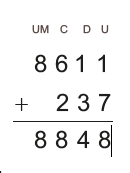Algoritmo por decomposição:
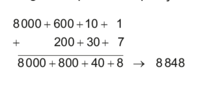Nesse caso, foram acrescentados 237 metros a altitude de 8 611 metros.
UNIDADE 2 - CAPÍTULO 1
49
49
Como vimos, podemos utilizar o algoritmo usual e o algoritmo por decomposição para realizar uma adição. A decomposição de um número natural pode nos auxiliar a calcular mentalmente uma adição. Aproveite este momento e estimule os alunos a realizar algumas adições usando o cálculo mental.
Veja, a seguir, algumas estratégias que podem ser utilizadas para realizar um cálculo mentalmente.
1. Vamos adicionar 64 + 52 decompondo os dois números e reagrupando-os.
64 + 52 = (60 + 4) + (50 + 2) = (60 + 50) + (4 + 2) = 110 + 6 = 116
2. Esta mesma adição pode ser realizada decompondo-se somente o segundo número e acrescentando sucessivamente da esquerda para direita, observe:
64 + 52 = 64 + (50 + 2) = 114 + 2 + 116
EF06MA03
A situação apresentada envolve a ideia de acrescentar da adição.
Logo, o Everest tem 8 848 metros de altitude.
A adição é uma operação matemática que está associada à ideia de reunir ou acrescentar.
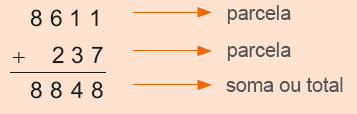Propriedades da adição de números naturais
Observe as seguintes adições:
23 + 15 = 38
15 + 23 = 38
Note que ao trocarmos a ordem das parcelas o resultado não se altera.
Na adição de dois números naturais, a ordem das parcelas não altera o resultado. Esta é a propriedade comutativa da adição.
Agora observe duas maneiras diferentes de realizar as seguintes adições:
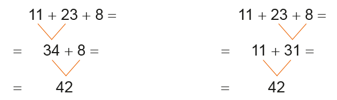Note que ao associarmos as parcelas de maneiras diferentes não altera-mos a soma.
Na adição de três ou mais números naturais, podemos associar as parcelas de maneiras diferentes e o resultado não se alterará. Esta é a propriedade associativa da adição.
Vejamos a seguir outra propriedade da adição: 35 + 0 = 0 + 35 =
35 + 0 = 0 + 35 = 35
0 + 79 = 79 + 0 = 79
Note que ao adicionarmos zero a qualquer número natural, o resultado é o próprio número. Esta é a propriedade do elemento neutro da adição.
UNIDADE 2 - CAPÍTULO 1
50
Sugestão de atividade
1. Solicite aos alunos que calculem mentalmente as adições abaixo registrando no caderno o valor encontrado e peça que expliquem oralmente a estratégia que adotaram para realizar a adição.
a) a) 32 + 86118
b) b) 79 + 61140
c) c) 142 + 83 225
d) d) 171 + 102 273
e) e) 253 + 124 377
► Após eles realizarem as adições e explicarem as estratégias usadas, você também pode mostrar outras estratégias. Observe algumas:
a) 32 + 86 = (30 + 2) + (80 + 6) = 110 + 8 = 118
32 + 86 = 32 + (80 + 6) = 112 + 6 = 118
32 + 86 = (30 + 2) + 86 = 116 + 2 = 118
50
Após os alunos realizarem a atividade 1, você pode propor que completem no caderno outros quadrados mágicos. Veja alguns exemplos:
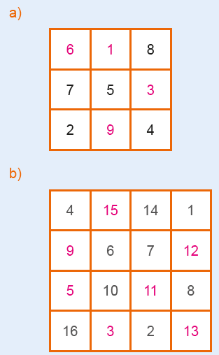Aproveite a tabela da atividade 3 e estimule os alunos a descreverem no caderno, por meio de um texto, as informações que eles identificaram na tabela. Eles podem fazer comparações e verificar qual a região que teve o maior ou menor número de casos, observando que a Covid-19 representou a maior quantidade de casos de síndrome respiratória no período indicado levando a muitos óbitos. Aproveite para relembrar sobre a importância da vacina como uma maneira de prevenção da doença.
EF06MA03
ENCONTRE SOLUÇÕES
1. De acordo com algumas lendas, tem-se que os Quadrados Mágicos são originários da China e apareceram pela primeira vez num manuscrito do tempo do Imperador Yu, cerca de 2200 a.C. Neles, as somas dos números das linhas horizontais, das colunas verticais e das diagonais principais são todas iguais, sendo que os números usados não se repetem. Agora, em seu caderno, complete o quadrado a seguir utilizando-se dos números de 1 a 9.
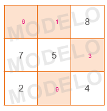2. Todos os meses, Lúcia anota as suas despesas em um caderno para saber o quanto gastou. Veja os gastos que ela teve na primeira semana do mês de janeiro, após voltar das férias.
Supermercado 72 reais
Farmácia 38 reais
Conta de luz 55 reais
► Quantos reais ela gastou nessa semana? 72 + 38 + 55 = 165 reais.
3. O Ministério da Saúde (MS) recebeu a primeira notificação de um caso confirmado de covid-19 no Brasil em 26 de fevereiro de 2020. Com base nos dados diários informados pelas Secretarias Estaduais de Saúde (SES) ao Ministério da Saúde, de 26 de fevereiro de 2020 a 4 de dezembro de 2021, foram confirmados 22 138 247 casos e 615 570 óbi-tos por covid-19 no Brasil. Observe abaixo um trecho do boletim epidemiológico, no qual mostra a quantidade de pessoas com sintomas de doenças respiratórias no período.
Casos de Síndrome Respiratória Aguda Grave (SRAG)
![Tabela com seis linhas e seis colunas. Na primeira linha: Região, Covid-19, Influenza, Outros vírus respiratórios, Outros agentes etiológicos, Total. Na segunda linha: Região Norte, 73.692, 54, 510, 165, espaço em branco na coluna total. Na terceira linha: Região Nordeste, 186.716, 266, 1.080, 870, espaço em branco. Na quarta linha: Região Sudeste, 571.034, 947, 6.691, 2.649, espaço em branco. Na quinta linha: Região Sul, 22.4671, 30, 5.746, 356, espaço em branco. Na sexta linha: Região Centro-Oeste: 120.046, 92, 2.068, 124, espaço em branco.](../../resources/images/professor/32.PNG)
Fonte: Ministério da Saúde, Semana Epidemiológica 48 - 28/11/2021 a 4/12/2021.
► Em seu caderno, complete a última coluna com o total de casos registrados em cada região do Brasil.
UNIDADE 2 - CAPÍTULO 1
51
b) 79 + 61 = (70 + 9) + (60 + 1) = 130 + 10 = 140
79 + 61 = 79 + (60 + 1) = 80 + 60 = 140
79 + 61 = (70 + 9) + 61 = 70 + 70 = 140
c) 142 + 83 = (100 + 40 + 2) + (80 + 3) =
100 + 120 + 5 = 220 + 5 = 225
142 + 83 = (140 + 2) + (80 + 3) = 220 + 5 = 225
142 + 83 = 142 + (80 + 3) = 222 + 3 = 225
d) 171 + 102 = (100 + 70 + 1) + (100 + 2) =
200 + 70 + 3 = 273
171 + 102 = 171 + (100 + 2) = 271 + 2 = 273
171 + 102 = (170 + 1) + (100 + 2) =
270 + 3 = 273
e) 253 + 124 = (200 + 50 + 3) + (100 + 20 + 4) =
300 + 70 + 7 = 377
253 + 124 = (250 + 3) + (120 + 4) = 370 + 7 = 377
253 + 124 = 253 + (100 + 20 + 4) =
353 + 20 + 4 = 373 + 4 = 377
51
Encontre soluções
Atividade 8
As adições podem ser resolvidas por meio do algoritmo da decomposição ou na forma de expressão utilizando a decomposição dos números, como mostramos na resolução. É interessante solicitar aos alunos que apresentem outras possibilidades de resolução, além da decomposição para realizar o cálculo mental. Os alunos podem criar estratégias próprias ou utilizar estratégias convencionais, permitindo o desenvolvimento da criatividade, da imaginação e a capacidade de comunicar claramente as suas conclusões.
Observe a seguir algumas estratégias que podem ser utilizadas pelos alunos no cálculo mental, além da decomposição.
► Decompor um número e acrescentar sucessivamente da esquerda para a
direita.
43 + 47 = 43 + (40 + 7) = 83 + 7 = 90
► Compensar os números, acrescentando a um deles o que se tira do
outro.
43 + 47 = 45 + 45 = 90
► Arredondar para completar a dezena e corrigir o resultado.
43 + 47 = 43 + (50 - 3) = 90
Atividade 9
Nesta atividade é importante mostrar aos alunos como pode-se calcular a soma, mentalmente, utilizando a propriedade associativa. Veja uma possibilidade de solução: 2 + 4 + 6 + 8 + 10 + 12 + 14 + 16 + 18 + 20 = 2 + 18 + 4 + 16 + 6 + 14 + 8 + 12 + 20 + 10 = 20 + 20 + 20 + 20 + 20 + 10 = 110
A partir da atividade 10 utilizamos a calculadora como instrumento pedagógico, aproveite para verificar se eles estão desenvolvendo o raciocínio lógico,
4. Observe as adições abaixo. Qual foi a propriedade aplicada em cada uma delas?
a) 10 + 9 = 9 + 10 Comutativa.
b) 5 + 0 = 5 Elemento neutro.
c) (2 + 5) + 3 = 2 + (5 + 3) Associativa.
d) 8 + 2 = 2 + 8 Comutativa.
e) 12 + (10 + 5) = (12 + 10) + 5 Associativa.
f) 0 + 126 = 126 Elemento neutro.
5. Calcule, em seu caderno, a soma de 109 e 274.
109 + 274 = 3836. No caderno, calcule a soma do número 983 com seu sucessor e seu antecessor.
983 + 982 + 984 = 2 9497. Resolva, mentalmente, as adições a seguir utilizando a decomposição.
a) 154 + 305 = 100 + 50 + 4 + 300 + 5 = 400 + 50 + 9 = 459
b) 528 + 212 = 500 + 20 + 8 + 200 + 10 + 2 = 700 + 30 + 10 = 740
c) 1 341 + 2 863 = 1 000 + 300 + 40 + 1 + 2 000 + 800 + 60 + 3 = 3 000 + 1 100 + 100 + 4 = 4 204
d) 5 420 + 6 974 = 5 000 + 400 + 20 + 6 000 + 900 + 70 + 4 = 11 000 + 1 300 + 90 + 4 = 12 394
8. Usando a propriedade associativa da adição, calcule mentalmente as adições a seguir.
a) 12 + 25 + 15 + 18 = 12 + 18 + 25 + 15 = 30 + 40 = 70
b) 325 + 14 + 25 + 16 = 325 + 25 + 14 + 16 = 350 + 30 = 380
c) 33 + 46 + 117 + 54 = 33 + 117 + 46 + 54 = 150 + 100 = 250
9. Calcule mentalmente a soma dos 10 primeiros números naturais pares.
10. Juliana usou uma calculadora para realizar a adição 923 + 841. Porém, em sua calculadora a tecla 9 estava quebrada. Como ela pode realizar essa adição? Utilizando uma calculadora, teste algumas possibilidades de como realizá-la. Qual resultado você encontrou?
Possibilidades: 800 + 123 + 841 = 1 764; 700 + 223 + 841, entre outras.11. Em uma calculadora, tecle:
7 3 + 2 0 = = =
a) Qual o resultado encontrado? 133
b) O que você observa ao teclar '=' 3 vezes a tecla ? Cada vez que o sinal de igual é teclado, é acrescentado 20 unidades ao valor obtido.
12. Usando uma calculadora, elabore em seu caderno um problema sobre adição de números naturais. Em seguida, troque o seu caderno com um colega para que ele resolva o problema elaborado por você. Juntos, verifiquem se os problemas resolvidos estão corretos. Resposta pessoal.
13. Os quilombos, historicamente, nasceram como espaços de resistência e liberdade onde pessoas negras e escravizadas que fugiam se abrigavam, sobretudo, entre os séculos 16 e 19. No entanto, foi somente em 1988, cem anos após a abolição da escravatura, que a Constituição Federal reconheceu esses espaços como comunidades remanescentes de quilombos e garantiu aos seus habitantes a regularização de suas terras. Nesse contexto, a educação sempre foi e continua sendo um ato de resistência da identidade, das tradições e dos saberes da cultura negra.
![Infográfico com dados da população e das escolas quilombolas. Sobre um fundo branco, acima e à direita em laranja: 258,6 mil matrículas foram registradas em escolas de áreas quilombolas em 2018. Ao centro, na cor verde: População Quilombola. Em preto, Escolas quilombolas com material específico para este grupo étnico Brasil e Regiões – 2018 – Educação Básica – Todas as redes. Mais abaixo um gráfico em forma de barra com o título Números de Estabelecimentos seguido de um retângulo vermelho, escrito em branco: Total: 749. Na barra, em verde, 134. Em cinza claro: 464. Em laranja: 85. Em azul: 31. Em cinza escuro: 35. Abaixo da barra, a legenda das cores. Verde: Norte. Cinza claro: Nordeste. Laranja: Sudeste. Azul: Sul. Cinza escuro: Centro-Oeste. Do retângulo com o número total de 749 sai uma flecha em direção a um gráfico em forma de pizza.
Nele, 30,3%, em vermelho, representa o Brasil. Uma flecha laranja aponta para os 30,3% com a frase em laranja: Somente um terço das escolas quilombolas do Brasil contam com material específico para este grupo étnico. Abaixo do infográfico, a fonte em letras ilegíveis.](../../resources/images/infoindi.PNG)
UNIDADE 2 - CAPÍTULO 1
52
52
atitude investigativa e se os argumentos são convencedores. Na última atividade, os alunos são convidados a elaborar um problema sobre adição de números naturais, avalie se utilizam os conhecimentos matemáticos, como os termos propriedade associativa, comutativa, etc., de modo a contemplar a Competência específica de Matemática 2.
Atividade 13
Ao realizar a atividade 13 converse com os alunos sobre a importância das Diretrizes Nacionais Operacionais para a garantia da qualidade das escolas Quilombolas. No dia 13 de março de 2021, foi aprovado o parecer que reexaminou o parecer CNE/CEB nº 8, de 10 de dezembro de 2020 que tratou destas diretrizes. O documento pode ser acessado em:
Nele, são tratados os aspectos relevantes das Diretrizes Curriculares Nacionais para a Educação Escolar Quilombola na Educação Básica: “A instituição escola, enquanto espaço constituído de transmissão e produção do conhecimento e, portanto, de ideologias, identifica a sociedade que acolhe e necessita tornar visíveis e protagonistas suas tradições, culturas e traços identitários, em perspectiva inclusiva e transparente.”
De acordo com as informações acima, responda em seu caderno:
a) É correto afirmar que a quantidade de escolas que possuem material específico nas regiões Sudeste, Sul e Centro-oeste, quando somadas, superam a quantidade de escolas da região Norte?
b) Vamos afirmar que a região Norte e Nordeste juntas possuem um número superior ao triplo de escolas das demais regiões juntas?
c) Na sua opinião, qual a importância de as escolas quilombolas terem material específico para este grupo étnico?
Subtração
Situação 1
Maurício mora em Cuiabá e irá passar as férias na casa de seus pais que moram em Campo Grande. Veja no mapa a distância entre essas duas cidades indo de carro.
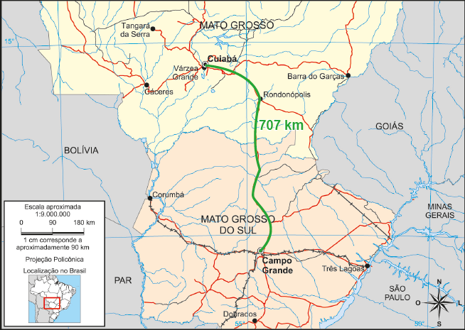Sabendo que ele já percorreu 230 km de carro, quantos quilômetros ainda faltam para chegar em Campo Grande?
Esse problema pode ser resolvido utilizando os algoritmos da subtração. Veja:
Algoritmo usual:
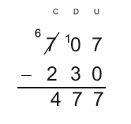Algoritmo por decomposição:
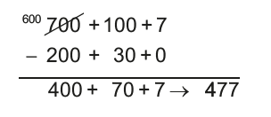53
UNIDADE 2 - CAPÍTULO 1
Subtração
No estudo da subtração, são apresentadas três situações-problema que envolvem ideias distintas relacionadas à subtração. Vamos analisar cada uma das situações.
Na primeira situação, questiona-se quantos quilômetros faltam a Maurício para chegar a Campo Grande sabendo que ele já percorreu 230 km. Como a distância entre Cuiabá e Campo Grande é de 707 km, utilizamos a operação de subtração para resolver o problema. Nesse caso, a ideia envolvida é a de completar, observe que há um todo que inclui as partes consideradas ou há um todo que pode ser completado. O todo é sempre inclusivo, e suas partes são subclasses.
53
Na situação apresentada nesta página, pergunta-se quantos hectares o Parque das Nações Indígenas tem a mais que o parque Ecológico Sóter. Nesse caso, a ideia envolvida é de comparar, observe que há dois todos que devem ser considerados. Ao compará-los, faz-se uma correspondência um a um para encontrar a diferença. Envolvendo a ideia de comparar, há ainda o caso em que o aluno compara o todo com uma de suas partes, e então deve ser capaz de pensar que a parte menor é um todo e, em simultâneo, uma parte do todo inicial.
É necessário que o aluno trabalhe a inclusão de classes, pensando em simultâneo, no todo e em cada uma de suas partes.
Para Maurício chegar em Cuiabá faltam 477 km.
Note que, no caso do algoritmo por decomposição, o número 707 foi decomposto como sendo 600 + 100 + 7 para que a subtração pudesse ser realizada.
Quando resolvemos um problema matemático podemos escolher o procedimento que vamos utilizar. Às vezes, um mesmo problema apresenta várias formas de resolução.
Situação 2
Quando Maurício está em Campo Grande, ele gosta de visitar dois parques da cidade. O Parque Ecológico do Sóter que apresenta uma área verde de 22 hectares, com quadras poliesportivas, pistas de skate e patinação, pista de cooper, ciclismo e quiosque com churrasqueiras; e o Parque das Nações Indígenas, considerado o maior parque urbano do mundo com 119 hectares. Quantos hectares o Parque das Nações Indígenas tem a mais que o Parque Ecológico do Sóter?
Algoritmo usual:
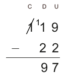Algoritmo por decomposição:
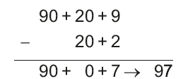Note que, no caso do algoritmo por decomposição, o número 119 foi decomposto como sendo 90 + 20 + 9 para que a subtração pudesse ser realizada.
Portanto, o Parque das Nações Indígenas tem 97 hectares a mais que o Parque Ecológico do Sóter.
UNIDADE 2 - CAPÍTULO 1
54
54
Na situação apresentada nesta página, questiona-se a quantia com que Maurício ficou após perder 35 reais, sendo que ele tinha 97 reais. Nesse caso, a ideia envolvida na situação é a ideia de retirar, note que há um todo do qual é retirada uma parte e que a parte que permanece fica menor. Nessa ideia, ocorrem três tempos: um estado inicial, o fato ou ação que transformou a quantidade inicial e um estado final. O estado inicial refere-se à quantia que Maurício tinha, a ação que transformou a quantidade inicial refere-se ao valor que ele perdeu, e o estado final à quantia com que ficou.
As ações de completar, comparar e tirar, mesmo sendo todas ideias subtrativas, constituem ações diferentes e exigem do aluno diferentes competências e habilidades.
EF06MA03
Situação 3
Em uma tarde que Maurício resolveu correr no parque, ele tinha no bolso do seu shorts 97 reais. Quando terminou a corrida notou que havia perdido 35 reais. Com quantos reais Maurício ficou?
Algoritmo usual:
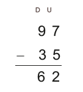Algoritmo por decomposição:
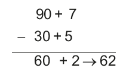Maurício ficou com 62 reais.
A subtração é uma operação matemática que está associada a ideia de retirar, completar ou comparar.
Os termos da subtração são:
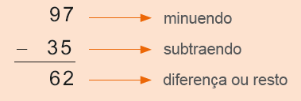Relação fundamental da subtração
97
-35
62
Note que 62 + 35 = 97. Em uma subtração tem-se que:
Minuendo = resto + subtraendo
Atenção!
Em uma subtração de números naturais, o minuendo deve ser maior que o subtraendo.
UNIDADE 2 - CAPÍTULO 1
55
55
Resgate os conceitos fundamentais para a resolução das atividades propostas, de modo que os alunos compreendam a relação entre a adição e a subtração, e tenham segurança ao utilizarem tais conhecimentos, de modo a desenvolverem a autoestima e a perseverança na busca de soluções, contemplando a Competência específica 3 da Matemática.
Atividade 2
Note que a soma de cada dois tijolos da base é igual ao resultado do tijolo que está entre eles na fila superior. Dessa maneira, os alunos podem utilizar a subtração e a adição para descobrir os valores que estão faltando.
Atividade 5
Nesta atividade, os alunos poderão utilizar a relação fundamental da subtração para calcular o valor desconhecido. Nesse momento, não serão usadas equações do 1.º grau. Esse conceito será visto posteriormente no 7.º ano. Porém, os alunos já podem ir se familiarizando com esse tipo de notação.
a) 205 + 178 = 383
b) 1 024 - 372 = 652
c) 891 - 89 = 802
d) 534 + 109 = 643
EF06MA03
ENCONTRE SOLUÇÕES
1. Joana estava passeando pelo shopping para fazer algumas compras e viu as seguintes roupas em uma vitrine:
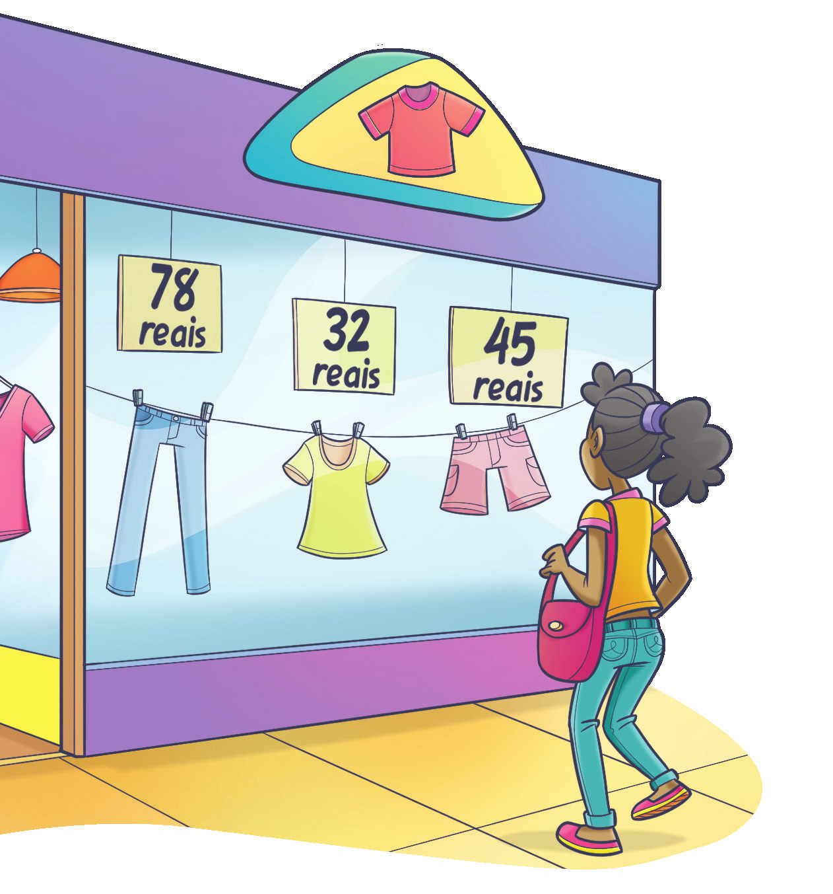
► Joana decidiu comprar uma calça e uma camiseta, irá pagar com uma
nota de 100 reais e outra de 50 reais. Quantos reais Joana receberá
de troco?
78 + 32 = 110 reais.
150 − 110 = 40 reais.
O troco será de 40 reais.
2. A pirâmide abaixo possui um segredo. Tente descobrir qual é o segredo e complete, em seu caderno, a pirâmide com os números que estão faltando.
![Pirâmide de cinco andares formada por 15 retângulos. A base tem cinco retângulos com os dois primeiros em branco da esquerda para a direita, no terceiro o número 6, no quarto o número 3, e no retângulo quinto, o espaço está em branco. No andar de cima, os dois primeiros espaços em branco, da esquerda para a direita, o terceiro tem o número 9 e o quarto retângulo, espaço em branco. No andar central, com três retângulos. O primeiro está em branco. O segundo, tem o número 24, e o terceiro está em branco. No penúltimo andar, com dois retângulos os números, 63 e 39. No último andar, um retângulo com o número 102.](../../resources/images/piramide.PNG)
3. Luciana irá de carro de Natal, no Rio Grande do Norte, até João Pessoa, na Paraíba. Ela tem a opção de fazer dois caminhos diferentes. Ela decidiu fazer o caminho passando pela cidade de Lagoa das Pedras, RN. Após percorrer 135 km, quantos quilômetros faltarão para ela chegar a João Pessoa? 219 − 135 = 84 km.
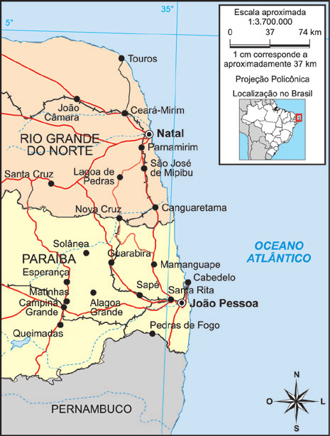4. Em seu caderno, efetue as subtrações 2. A pirâmide abaixo possui um segre-a seguir usando a decomposição.
a) 267 - 145 122
b) 598 - 405 193
c) 1 017 - 782 235
d) 2 575 - 1 230 1 345
5. Calcule, no caderno, o valor ▲ para que as sentenças sejam verdadeiras.
a) ▲ - 178 = 205 383
b) 1 024 - ▲ = 372 652
c) 891 - ▲ = 89 802
d) ▲ - 534 = 109 643
UNIDADE 2 - CAPÍTULO 1
56
56
Atividade 12
Menor número de três algarismos diferentes: 102.
Maior número de três algarismos diferentes: 987.
987 – 102 = 885
Atividade 13
Os números de cinco algarismos cada um, para que a diferença seja a menor possível é
50 123 – 49 976, cuja diferença é 247.
EF06MA03
6. Marcela foi ao supermercado e comprou os seguintes produtos:
a) Quantos reais Marcela gastou ao todo? 12 + 4 + 13 + 27 = 56 reais.
b) Se ela pagou com duas notas de 50 reais, quantos reais recebeu de troco? 100 − 56 = 44 reais.
7. O Rio Nilo, com 6 852 km, era considerado o maior rio do mundo. Porém, em 2008, descobriu-se que o Rio Amazonas possui uma extensão de 6 992 km. Ele também é o que tem maior volume de água do mundo. Quantos quilômetros o Rio Amazonas tem a mais que o Rio Nilo? 6 992 − 6 852 = 140. Ele tem 140 quilômetros a mais.
8. Em uma adição de três parcelas, a primeira é 1 057 e a segunda é
739. A terceira parcela é a diferença entre as duas primeiras
parcelas. No caderno, determine a soma das três parcelas.
1 057 − 739 = 318
1 057 + 739 + 318 = 2 114
9. Usando os algarismos 9, 8 e 7 escreva dois números naturais, sem repetir os algarismos em cada um deles. Em seguida, use uma calculadora para realizar a subtração entre o maior e o menor número. Que número natural você encontrou? Resposta pessoal.

10. Em uma calculadora, tecle:
8 6 9 – 1 0 0 = = = =
a) Qual o resultado encontrado? 469
b) O você observa ao teclar 4 vezes a tecla = ? Cada vez que o sinal de igual é teclado, é subtraído 100 unidades ao valor obtido.
11. Em seu caderno, elabore um problema sobre subtração de números naturais. Em seguida, troque seu caderno com um colega para que ele resolva o problema elaborado por você. Juntos, verifiquem se os problemas resolvidos estão corretos. Resposta pessoal.

12. A Estátua da Liberdade, em Nova Iorque, tem da ponta da tocha ao chão 93 metros. Já o Cristo Redentor, no Rio de Janeiro, tem 38 metros de altura. Qual a diferença de altura entre as duas estátuas? 93 - 38 = 55. A diferença é de 55 metros.

13. (OBMEP) Joãozinho subtraiu o menor número de três algarismos diferentes do maior número de três algarismos diferentes. Que resultado ele obteve?
a) 882
b) 883
c) X 885
d) 886
e) 888
14. (OBMEP) Mário gosta de escrever dois números de cinco algarismos usando todos os algarismos de 0 a 9 e depois subtrair o menor do maior.
Por exemplo, ele escreveu os números 78 012 e 39 654 e calculou sua diferença 78 012 − 39 654 = 38 358. Qual é a menor diferença que ele pode obter?
a) 237
b) 239
c) 247
d) 249
e) 269
UNIDADE 2 - CAPÍTULO 1
57
57
Arredondamentos para fazer estimativas
De acordo com Walle (2009, p. 273-274):
meta de longo prazo para o cálculo estimado é ser capaz de produzir um resultado aproximado rapidamente para um cálculo que seja adequado à situação. Na vida diária, as habilidades de estimativa poupam um tempo valioso. Muitas situações não exigem uma resposta exata, portanto, usar uma calculadora ou lápis e papel não são necessários, se você tem boas habilidades de estimativa.[...]
Isolado, o termo estimar se refere a um número que é uma aproximação adequada para um número exato dado o contexto particular. Esse conceito de estimativa é aplicado não apenas ao cálculo, mas também às medidas e quantidades.
Para nos ajudar a realizar uma estimativa podemos arredondar os valores que estão envolvidos na situação apresentada. Porém para realizar esses arredondamentos alguns critérios devem ser seguidos, desta forma o valor estimado estará próximo do valor real. Neste momento vamos abordar como realizar estes arredondamentos. Estimule os alunos a realizar os cálculos mentalmente aplicando os critérios de arredondamentos que serão estudados. Proponha outras situações do contexto da sua comunidade em que os alunos possam utilizar as estratégias estudadas para realizar estimativas.
Luciana está verificando a distância entre algumas cidades brasileiras, para calcular quantos quilômetros ela irá percorrer durante uma viagem de férias que irá fazer. No quadro abaixo, ela escreveu algumas dessas distâncias.
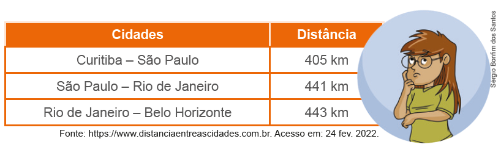Fonte: https://www.distanciaentreascidades.com.br. Acesso em: 24 fev. 2022.
Para calcular o valor aproximado que irá percorrer, Luciana pode fazer uma estimativa da distância fazendo um arredondamento dos valores, o que a ajudará a realizar o cálculo mentalmente. Em muitas situações do dia a dia, arredondar um número nos auxilia a realizar cálculos de maneira rápida, fazendo uma estimativa.
Ao arredondarmos um número, o tornamos mais fácil para realizar cálculos. Porém, é preciso observar alguns critérios para fazer o arredondamento:
► deve-se observar o algarismo à direita da ordem escolhida. Se o algarismo que será substituído por zero for 1, 2, 3 ou 4, mantém o algarismo da ordem anterior e os posteriores, se houver, são transformados em zero. Por exemplo, 50 é um arredondamento de 52. Observe outros exemplos de arredondamentos:
63 → 60
Arredondando para dezena mais próxima.
782 → 780
Arredondando para dezena mais próxima.
124 → 100
Arredondando para centena mais próxima.
1 311 → 1 300
Arredondando para centena mais próxima.
2 103 → 2 000
Arredondando para o milhar mais próximo.
57 → 60
Arredondando para dezena mais próxima.
779 → 780
Arredondando para dezena mais próxima.
96 → 100
Arredondando para centena mais próxima.
1 258 → 1 300
Arredondando para centena mais próxima.
1 897 → 2 000
Arredondando para o milhar mais próximo.
► se o algarismo que será substituído por zero for 5, 6, 7, 8 ou 9, adiciona-se uma unidade ao algarismo da ordem anterior e os posteriores, se houver, são transformados em zero. Por exemplo, 80 é um arredondamento de 78. Observe outros exemplos de arredondamentos:
UNIDADE 2 - CAPÍTULO 1
58
58
Os alunos podem arredondar para a dezena ou a centena mais próxima. No caso do arredondamento para a dezena mais próxima, o valor estimado será de 1 310 km. Caso o arredondamento seja para a centena mais próxima o valor estimado será de 1 200 km. Converse com eles sobre a diferença encontrada e, neste caso, qual seria a melhor estimativa. Faça questionamentos sobre a importância da ordem escolhida, para que se tenha um valor estimado próximo do real, e em quais casos isso é importante.
1. Troque ideias com seu colega e escrevam em seus cadernos algumas possibilidades de arredondamentos que Luciana pode fazer para estimar a distância que irá percorrer de Curitiba até Belo Horizonte, passando por São Paulo e Rio de Janeiro. Depois, façam uma estimativa do percurso que será percorrido. Respostas pessoais.
1. Em seu caderno, arredonde os números a seguir para a ordem indicada.
a) 78 para dezena mais próxima. 80
b) 135 para dezena mais próxima. 140
c) 189 para centena mais próxima. 200
d) 841 para centena mais próxima. 800
e) 12 369 para unidade de milhar mais próxima. 12 000
2. Márcia está no shopping para fazer algumas compras, e está observando uma vitrine de roupas.
a) Em seu caderno, faça uma estimativa e anote o quanto Márcia gastará se comprar:
► uma calça e uma blusa; 110 reais (arredondado para dezena mais próxima).
► uma blusa e uma bermuda; 80 reais (arredondado para dezena mais próxima).
► duas calças; 160 reais (arredondado para dezena mais próxima).
► uma peça de cada. 160 reais (arredondado para dezena mais próxima).
b) Se Márcia tem 150 reais, o que ela consegue comprar? Uma calça e uma blusa; uma blusa e uma bermuda, entre outras possibilidades.
3. Observe os produtos e os seus preços.
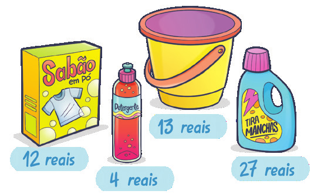a) Em seu caderno, elabore um problema envolvendo arredondamentos e estimativa. Depois, troque de caderno com seu colega para que ele o resolva. Resposta pessoal.
b) Com seu colega, verifiquem se os problemas elaborados foram resolvidos corretamente. Resposta pessoal.
4. Com um colega, façam uma lista no caderno de ocasiões em que fazer estimativas nos auxiliam a resolver diversos problemas.

5. Arredondando as parcelas para a dezena mais próxima, calcule mentalmente o valor aproximado das expressões numéricas a seguir.
a) 32 + 46 + 54 130
b) 91 + 112 – 34 170
c) 65 + 31 + 48 150
d) 98 – 28 + 15 90
UNIDADE 2 - CAPÍTULO 1
59
59